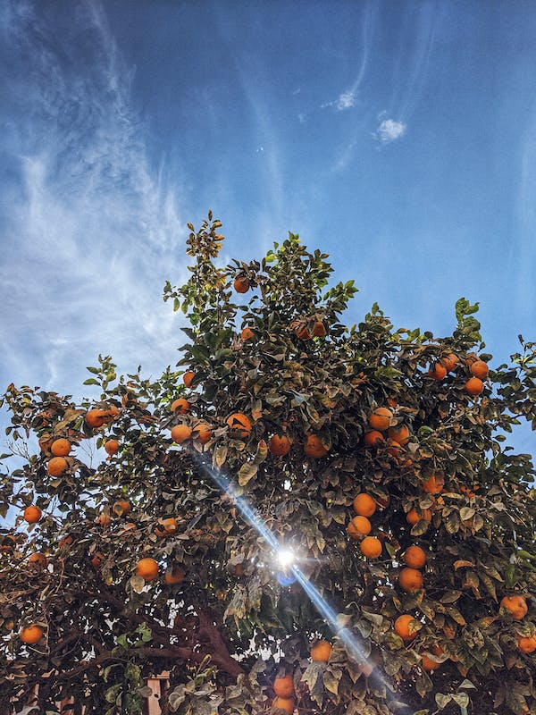

Плодовые деревья
Абрикос обыкновенный
Ботаническое описание
Листопадное дерево средней высоты (5—8 м) и окружности кроны. Кора на
старых стволах серо-бурая, продольно растрескивающаяся. Молодые побеги
блестящие, голые, красновато-коричневые, с многочисленными мелкими чечевичками.
Листья очерёдные, черешковые, округлые, яйцевидные, на верхушке оттянутые, мелкозубчатые
или удвоенно-зубчатые; 6—9 см длиной. Черешки тонкие, желобчатые, с желёзками при основании
пластинки. Плоды — сочные однокостянки желтовато-красного («абрикосового») цвета, в очертании
округлые, эллиптические или обратнояйцевидные, с продольной бороздкой.
Апельсин
Ботаническое описание
Довольно высокое дерево, относится к трибе Цитрусовые (Citreae) подсемейства Померанцевые
(Aurantioideae) семейства Рутовые (Rutaceae). Цельные многолетние листья апельсина одиночные
сложные — соединяются со своими крылатыми черешками посредством промежуточного широкого сочленения.
Белые цветки сидят по шесть, кистями и состоят из пятираздельного малораскрывающегося околоцветника
с толстыми долями, множества тычинок и одиночной свободной, или «верхней», завязью (известные
как «fleurs d.orange»).Плод — многогнёздный, многосемянный, с толстой двуслойной кожурой. Мякоть
состоит из множества соковых мешочков — веретеновидных, заполненных соком волосков (по своему
происхождению соковые мешочки представляют собой выросты внутренней эпидермы плодолистиков).
Апельсин

©Казакова Варвара Вадимовна